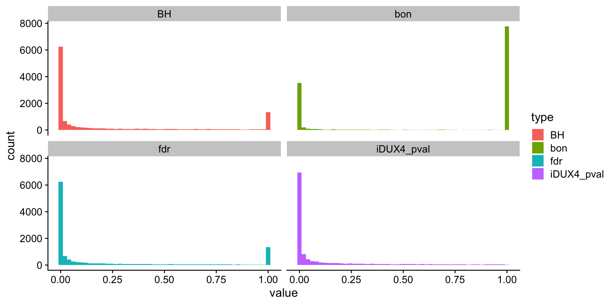
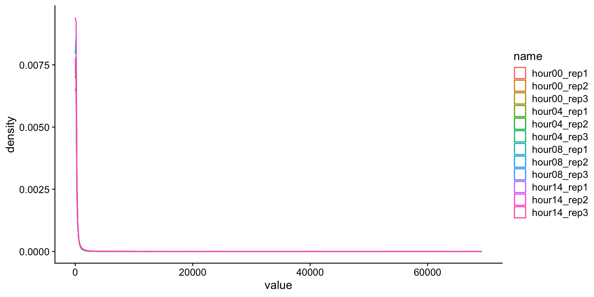
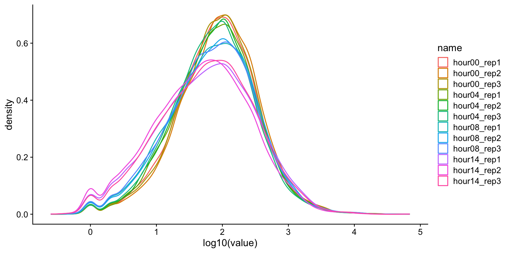
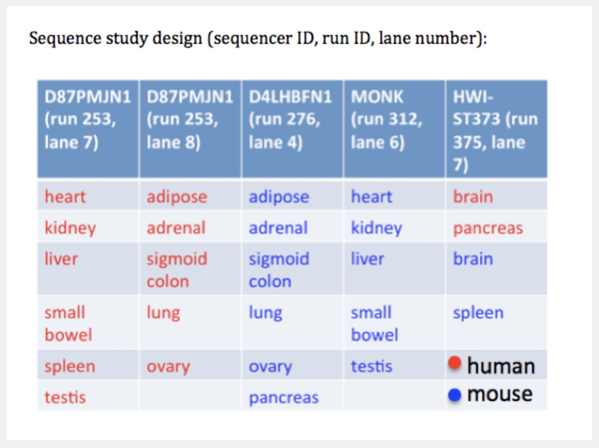

rna <- read_csv(here("data/bootcamp/data_rna_protein.csv.gz")) |> select(iDUX4_pval)
rna$fdr <- p.adjust(p = rna$iDUX4_pval, method = "fdr", n = nrow(rna))
rna$BH <- p.adjust(p = rna$iDUX4_pval, method = "BH", n = nrow(rna))
rna$bon <- p.adjust(p = rna$iDUX4_pval, method = "bonferroni", n = nrow(rna))
rna_long <- rna |> pivot_longer(cols = iDUX4_pval:bon, names_to = "type")
ggplot(data = rna_long, aes(x = value, fill = type)) +
geom_histogram(bins = 50) +
facet_wrap(~type) +
theme_cowplot()Stats Bootcamp - class 15
Dealing with big data
Neelanjan Mukherjee
RNA Bioscience Initiative | CU Anschutz
2023-10-05
Learning objectives
- Types of error and multiple test corrections
- Exploratory data analysis
- Clustering and overlaps
Types I and II error
False positives and False negatives

\(\alpha\) - significance level OR evidentiary standard
\(\beta\) - type II error rate, 1 - \(\beta\) is power
Different visualization
Power vs Significance

Genomics -> Lots of Data -> Lots of Hypothesis Tests
In a typical RNA-seq experiment, we test ~10K different hypotheses. For example, you have 10K genes and for each gene you test whether the mean expression changed in condition A vs condition B. Using a standard p-value cut-off of 0.05, we’d expect 500 genes to be deemed “significant” by chance. Thus, we are very concerned about False Positives or Type I Errors.
Multiple test corrections
Control overall
(also known as family-wise error rate or FWER), which will affect the * for each test. That is, we are controlling the overall probability of making at least one false discovery. Bonferroni and Sidak corrections all control FWER. Control false discovery rate (FDR). These procedures allow for type 1 errors (false positives) but control the proportion of these false positives in relation to true positives. This is done by adjusting the decision made for the p-value associated with each individual test to decide rejection or not. Because this will result in a higher type 1 error rate, it has higher power. This affords a higher probability of true discoveries. The step procedures control for FDR.
Bonferroni Correction
The most conservative of corrections, the Bonferroni correction is also perhaps the most straightforward in its approach. Simply divide
= /m
However, with many tests,
Sidak Correction
= 1-(1- )^(1/m)
Holm’s Step-Down Procedure
The Holm-Bonferroni method is also fairly simple to calculate, but it is more powerful than the single-step Bonferroni.
\(HB = \displaystyle \frac {target \alpha}{n - rank + 1}\)
H1: 0.005
H2: 0.01
H3: 0.03
H4: = 0.04
Step 1: Order the p-values from smallest to greatest (already done)
Step 2: Calc HB for the first rank HB = .05 / 4 – 1 + 1 = .05 / 4 = .0125 H1: 0.005 < .0125, so we reject the null
Step 4: Repeat the HB formula for the second rank and keep going until we find \(H{_N}\) > \(HB{_N}\). All subsequent hypotheses are non-significant (i.e. not rejected).
Hochberg’s Step-Up Procedure
More powerful than Holm’s step-down procedure, Hochberg’s step-up procedure also seeks to control the FDR and follows a similar process, only p-values are ranked from largest to smallest.
For each ranked p-value, it is compared to the
Example
Example

Exploratory data analysis (EDA)
Our goal here is to get an top-down big picture of the similarity/differences between variables in a dataset. For example, let’s say you do RNA-seq in triplicate on 4 treatment/developmental times.
PCA
We will perform PCA on all of the samples and visualize the relationship between samples.
Correlation matrix
We will perform hierarchical clustering on a matrix representing the pairwise correlation between all these samples.
Explore data
Is it normal-ish?
# get dux targets
dux_targets <- read_csv(file = here("data", "target_genes.csv.gz"))
d <- read_tsv(here("data", "data_genelevel.tsv.gz")) |>
mutate(target = case_when(
gene_symbol %in% dux_targets$hgnc_symbol ~ "target",
TRUE ~ "not_target"
)) |>
filter(gene_symbol != "ISCA1") |>
drop_na()
d |>
pivot_longer(cols = hour00_rep1:hour14_rep3) |>
ggplot(aes(x = value, color = name)) +
geom_density() +
theme_cowplot()
Definitely not normal
Data transformations
We often transform data to make it closer to being normally-distributed. This allows us to use more powerful statistical tests on the same data. One approach is to log-transform the data.

What is this?
Warning message: Removed 1251 rows containing non-finite values (stat_density()).
Pseudocounts
\(log_{x}(0)\) is a common problem. One solution is to add a pseudocount. Since this is read count data, the smallest unit is 1 and so we will add 1 to all the observations before perforing the log transformation. \(1\) represents the pseudocount in this case.
correlation analysis
prepare the data for analysis
# pull counts
x <- d |>
select_if(is.numeric) |> # keep only the numeric columns
mutate_all(funs(log2(1 + .))) |> # log2 transform
as.matrix() # matrix
rownames(x) <- d$gene_symbol
x <- t(scale(t(x)))
# pairwise pearson correlation
p <- cor(x, method = "pearson")
pheatmap(
mat = p,
clustering_distance_rows = "euclidean",
clustering_distance_cols = "euclidean",
clustering_method = "ward.D2"
)correlation analysis
PCA
PCA is a common dimensionality reduction method that is used to visualize the similarity and differences in your data.
Let’s watch this fantastic 5 minute video explaining PCA
PCA
Importance of components:
PC1 PC2 PC3 PC4 PC5 PC6 PC7
Standard deviation 2.3743 1.2799 0.79753 0.64825 0.53023 0.47044 0.46316
Proportion of Variance 0.5739 0.1668 0.06475 0.04278 0.02862 0.02253 0.02184
Cumulative Proportion 0.5739 0.7407 0.80544 0.84822 0.87684 0.89937 0.92121
PC8 PC9 PC10 PC11 PC12
Standard deviation 0.4541 0.44316 0.43982 0.4217 7.459e-15
Proportion of Variance 0.0210 0.01999 0.01969 0.0181 0.000e+00
Cumulative Proportion 0.9422 0.96221 0.98190 1.0000 1.000e+00PCA - prepare visualization
# create a dataframe with the importance/explanation of variation for each PC
pca_data_info <- summary(pc)$importance |> as.data.frame()
pca_data_info <- round(x = pca_data_info, digits = 3)
# we make a dataframe out of the rotations and will use this to plot
pca_plot_data <- pc$rotation |>
as.data.frame() |>
rownames_to_column(var = "ID") |>
separate(col = ID, into = c("time", "rep"), sep = "_")
# recode "rep"
pca_plot_data$rep <- recode(pca_plot_data$rep,
rep1 = "A",
rep2 = "B",
rep3 = "C"
)
# gsub hour
pca_plot_data$time <- gsub(
pattern = "hour",
replacement = "",
x = pca_plot_data$time
)
ggplot(data = pca_plot_data, mapping = aes(x = PC1, y = PC2, color = time)) +
geom_point() +
xlab(paste("PC1, %", 100 * pca_data_info["Proportion of Variance", "PC1"])) +
ylab(paste("PC2, %", 100 * pca_data_info["Proportion of Variance", "PC2"])) +
ggtitle("PCA for DUX4 timecourse") +
theme_cowplot()PCA - prepare visualization
Famous PCA example
Using gene expression as your measurement, do you think the mouse liver is more similar to a mouse heart or a human liver?
The Mouse ENCODE Consortium reported that comparative gene expression data from human and mouse tend to cluster more by species rather than by tissue.

A comparative encyclopedia of DNA elements in the mouse genome
Comparison of the transcriptional landscapes between human and mouse tissues
Some found this hard to believe
Yoav Gilad’s lab recapitulated the initial result:

This observation was surprising, as it contradicted much of the comparative gene regulatory data collected previously, as well as the common notion that major developmental pathways are highly conserved across a wide range of species, in particular across mammals.
Careful with batch effects
But noticed something funny about which samples were sequenced on the same lanes.
Accounting for batch effects

Here we show that the Mouse ENCODE gene expression data were collected using a flawed study design, which confounded sequencing batch (namely, the assignment of samples to sequencing flowcells and lanes) with species. When we account for the batch effect, the corrected comparative gene expression data from human and mouse tend to cluster by tissue, not by species.
K-means clustering to look for patterns
Goal: to partition n observations into k clusters in which each observation belongs to the cluster with the nearest mean, serving as a prototype of the cluster. –Wiki
K-means
K-Means data preparation
- Rows are observations (individuals) and columns are variables
- Any missing value in the data must be removed or estimated.
- The data must be standardized (i.e., scaled) to make variables comparable.
Scaling or z-score
 {%20}
{%20}
\(x\) = observation
\(\mu\) = population mean
\(\sigma\) = population sd
We will be using this function on each row. This will allow comparison of relative changes across a row, for all rows.
K-Means clustering
- Computing k-means clustering in R (pheatmap)
- Determine appropriate cluster number
- Add new column with cluster number to initial data
How do we figure out the optimal # clusters?
There are many methods, but we will stick with the “elbow” method.
K-means is minimizing the total within cluster sum of squares (wss).
We pick the cluster where that drop in total reaches diminishing returns -> the elbow.
Let’s cluster once to see
Let’s cluster once to see
Functions in R

Create function to calculate wss
find the elbow
Final clustering
Which cluster(s) contains DUX4 targets?
Fisher’s Exact Test and the Hypergeometric Distribution
# list of genes by dux4 targeting
duxList <- split(cd$gene_symbol, cd$target)
# list of genes by clustering
clustList <- split(cd$gene_symbol, as.factor(cd$Cluster))
# calculate all overlaps between lists
gom.duxclust <- newGOM(duxList,
clustList,
genome.size = nrow(d)
)
getMatrix(gom.duxclust, "pval") |>
t() |>
as.data.frame() |>
rownames_to_column(var = "clust") |>
as.tibble() |>
arrange(target)Which cluster(s) contains DUX4 targets?
# A tibble: 7 x 3
clust not_target target
<chr> <dbl> <dbl>
1 5 1.00 2.59e-14
2 6 1.00 1.57e- 5
3 2 0.182 9.25e- 1
4 4 0.0261 9.96e- 1
5 1 0.000114 1.00e+ 0
6 7 0.00000128 1.00e+ 0
7 3 0.0107 1 e+ 0Let’s calculate the empirical p-value of the cluster most enriched for DUX4 targets by sampling
In order to do this, you will need to:
- Identify which cluster is the most enriched for DUX4 targets.
- Determine how many genes are in the cluster. You will need to know this to figure out how many genes to sample from the whole data set.
- Determine how many of the genes in the cluster are DUX4 targets. This is the metric that you are interested in comparing between the null distribution and your observation.
- Generate 1000 random sample of the proper size from all genes and find out how many of them are DUX4 targets.
- Visualize the distribution of DUX4 targets in these 1000 random (your null distribution) and overlay the number of DUX4 targets you observed in the cluster that was most enriched for DUX4 targets.
Course website: https://rnabioco.github.io/molb-7950